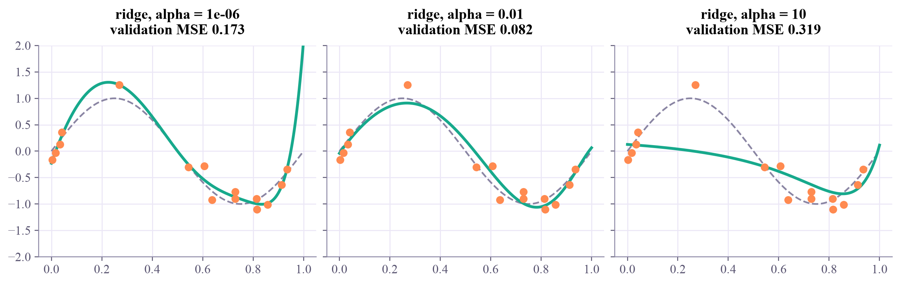
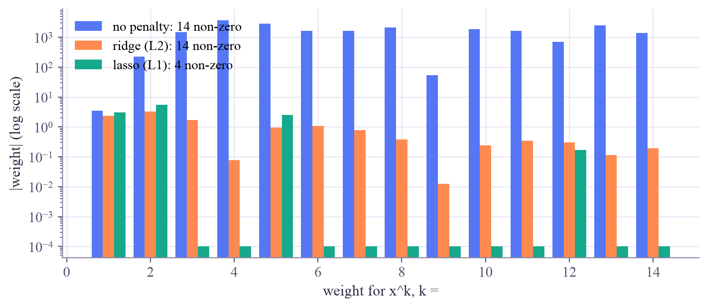
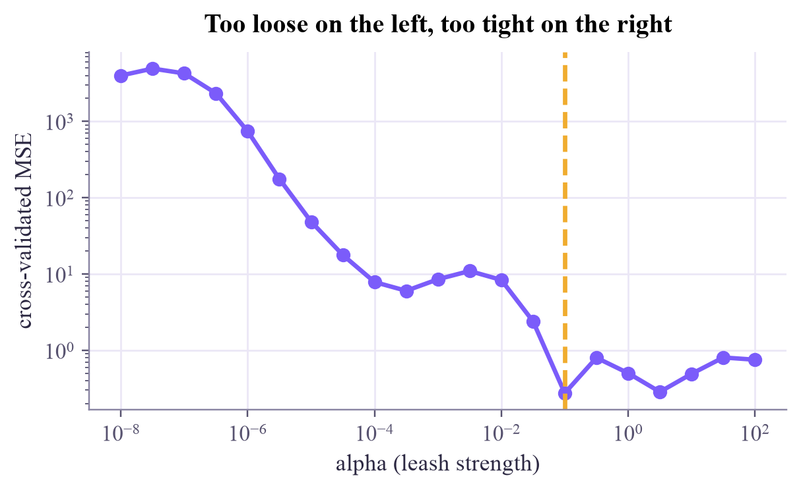

degree 14, no penalty: training MSE 0.0111, validation MSE 0.9 largest weight: 3682.0
Machine Learning
 about 11 min
about 11 min ml-w2d5.ipynb
ml-w2d5.ipynb
Ridge and lasso: keeping models simple
Keep the flexible model, but put its weights on a leash: ridge shrinks them, lasso zeroes them, and cross-validation decides how tight.
In this lesson you will
- Explain ridge (L2) and lasso (L1) penalties and what does
- Choose the strength of the penalty by cross-validation
- Use
weight_decay, PyTorch's name for ridge
Warm-up
1 minConnect the dots, or see the trend?

Yesterday a degree-12 polynomial went wild between its training points. One fix is to lower the degree. A smarter one keeps all the flexibility but makes big weights expensive, so the model only bends where the data really asks for it. They are called ridge and lasso; today you'll watch them work.
Big idea
4 minComplexity, and a leash
Look at the weights of an overfitting polynomial and you find huge numbers, in the thousands, finely balanced against each other so the curve can hit every noisy point. A gentle curve doesn't need that. So we change what "best" means: the loss gets a penalty that grows with the size of the weights.
Ridge (L2)
Shrinks every weight a bit. Smooth, stable, the most common choice.
Lasso (L1)
Pushes many weights to exactly zero: it also picks which features matter.
(lambda) sets the strength of the leash: is no leash, a huge flattens the model into underfitting. In between lies the same U-shape as yesterday's degree, so is a hyperparameter, chosen like in week 1: by cross-validation on the training data.
Regularization trades a little bias for a big drop in variance. On small datasets, that's almost always a good deal.
Two practical notes: penalties compare weights, so the features must be standardized first; and in PyTorch, ridge is called weight_decay, an argument of the optimizer.
Play
5 minDegree and leash
Orange dots are the 15 training points; the faint dots are fresh validation data. Raise the degree until it overfits, then add a penalty and pull it back.
Try this
Set degree 14 with no penalty: look at the size of the weights. Now choose Lasso and slowly increase : watch the weight bars drop to zero one by one while the curve calms down. Can you find the with the lowest validation error?
Code
3 minRegularization in scikit-learn
The notebook for this lessonEvery code cell below, with what it printed, is in
ml-w2d5.ipynb. To change the code and run it yourself, open the notebook in Google Colab (free, in your browser) or download it for your own Jupyter.import numpy as np
import matplotlib.pyplot as plt
from sklearn.pipeline import make_pipeline
from sklearn.preprocessing import PolynomialFeatures, StandardScaler
from sklearn.linear_model import LinearRegression, Ridge, Lasso
rng = np.random.default_rng(0)
def truth(x):
return np.sin(2 * np.pi * x)
x_train = np.sort(rng.uniform(0, 1, 15))
y_train = truth(x_train) + rng.normal(0, 0.25, 15)
x_val = rng.uniform(0, 1, 200) # fresh data for validation
y_val = truth(x_val) + rng.normal(0, 0.25, 200)
xs = np.linspace(0, 1, 300)
def mse(model, x, y):
return np.mean((model.predict(x.reshape(-1, 1)) - y) ** 2)
def poly_model(regressor, degree=14):
"""Polynomial features (standardized), then a linear model on top."""
return make_pipeline(PolynomialFeatures(degree, include_bias=False), StandardScaler(), regressor)
wild = poly_model(LinearRegression()).fit(x_train.reshape(-1, 1), y_train)
print(f"degree 14, no penalty: training MSE {mse(wild, x_train, y_train):.4f}, validation MSE {mse(wild, x_val, y_val):.1f}")
print("largest weight:", np.abs(wild[-1].coef_).max().round(0))What it printed in the notebook
fig, axes = plt.subplots(1, 3, figsize=(11, 3.4), sharey=True, layout="constrained")
for ax, alpha in zip(axes, [1e-6, 1e-2, 10]):
model = poly_model(Ridge(alpha=alpha)).fit(x_train.reshape(-1, 1), y_train)
ax.plot(xs, truth(xs), "--", color="#8a85a3", lw=1.5)
ax.plot(xs, model.predict(xs.reshape(-1, 1)), color="#17a98c", lw=2.5)
ax.scatter(x_train, y_train, color="#ff8a50", zorder=3)
ax.set_ylim(-2, 2)
ax.set_title(f"ridge, alpha = {alpha:g}\nvalidation MSE {mse(model, x_val, y_val):.3f}")
plt.show()What it printed in the notebook

fits = {
"no penalty": LinearRegression(),
"ridge (L2)": Ridge(alpha=1e-2),
"lasso (L1)": Lasso(alpha=1e-3, max_iter=200_000),
}
fig, ax = plt.subplots(figsize=(7.5, 3.2), layout="constrained")
width = 0.27
for i, (name, reg) in enumerate(fits.items()):
m = poly_model(reg).fit(x_train.reshape(-1, 1), y_train)
w = np.abs(m[-1].coef_)
ax.bar(np.arange(1, 15) + (i - 1) * width, np.maximum(w, 1e-4), width, label=f"{name}: {np.sum(w > 1e-6)} non-zero")
ax.set_yscale("log")
ax.set_xlabel("weight for x^k, k =")
ax.set_ylabel("|weight| (log scale)")
ax.legend()
plt.show()What it printed in the notebook

And the honest way to choose the leash, 5-fold cross-validation over 21 strengths:
from sklearn.model_selection import GridSearchCV
alphas = np.logspace(-8, 2, 21)
search = GridSearchCV(poly_model(Ridge()), {"ridge__alpha": alphas}, cv=5, scoring="neg_mean_squared_error")
search.fit(x_train.reshape(-1, 1), y_train)
best_alpha = search.best_params_["ridge__alpha"]
print(f"best alpha by 5-fold CV: {best_alpha:.1e}")
print(f"its validation MSE on fresh data: {mse(search.best_estimator_, x_val, y_val):.3f}")
plt.figure(figsize=(6.2, 3.2))
plt.plot(alphas, -search.cv_results_["mean_test_score"], "o-", color="#7b5cfa")
plt.axvline(best_alpha, color="#f0ac2e", ls="--")
plt.xscale("log")
plt.yscale("log")
plt.xlabel("alpha (leash strength)")
plt.ylabel("cross-validated MSE")
plt.title("Too loose on the left, too tight on the right")
plt.show()What it printed in the notebook
best alpha by 5-fold CV: 1.0e-01 its validation MSE on fresh data: 0.155

Your turn
2 minYour turn: ridge in PyTorch
Train the same degree-12 polynomial in PyTorch, once without and three times with weight_decay. Compare the validation errors and the largest weight. Where is the sweet spot?
import torch
def features(x, degree=12):
F = np.vander(2 * x - 1, degree + 1, increasing=True)[:, 1:] # x mapped to [-1, 1], then powers
return torch.tensor(F, dtype=torch.float32)
Xtr, Ytr = features(x_train), torch.tensor(y_train, dtype=torch.float32).reshape(-1, 1)
Xva, Yva = features(x_val), torch.tensor(y_val, dtype=torch.float32).reshape(-1, 1)
def train(weight_decay):
torch.manual_seed(0)
model = torch.nn.Linear(12, 1)
optimizer = torch.optim.Adam(model.parameters(), lr=0.05) # TODO: pass weight_decay=weight_decay
for step in range(3000):
optimizer.zero_grad()
torch.nn.functional.mse_loss(model(Xtr), Ytr).backward()
optimizer.step()
val = torch.nn.functional.mse_loss(model(Xva), Yva).item()
return val, model.weight.abs().max().item()
for wd in [0.0, 1e-2, 1e-1, 1.0]:
val, biggest = train(wd)
print(f"weight_decay = {wd:g}: validation MSE {val:.3f}, largest weight {biggest:.1f}")Need a hint?
Only one line changes: torch.optim.Adam(model.parameters(), lr=0.05, weight_decay=weight_decay).
Show a solution
def train(weight_decay):
torch.manual_seed(0)
model = torch.nn.Linear(12, 1)
optimizer = torch.optim.Adam(model.parameters(), lr=0.05, weight_decay=weight_decay)
for step in range(3000):
optimizer.zero_grad()
torch.nn.functional.mse_loss(model(Xtr), Ytr).backward()
optimizer.step()
val = torch.nn.functional.mse_loss(model(Xva), Yva).item()
return val, model.weight.abs().max().item()
for wd in [0.0, 1e-2, 1e-1, 1.0]:
val, biggest = train(wd)
print(f"weight_decay = {wd:g}: validation MSE {val:.3f}, largest weight {biggest:.1f}")
print("A little weight decay keeps the weights small and the curve calm. Too much and it underfits.")What it printed in the notebook
weight_decay = 0: validation MSE 0.231, largest weight 2.5 weight_decay = 0.01: validation MSE 0.113, largest weight 2.0 weight_decay = 0.1: validation MSE 0.208, largest weight 1.0 weight_decay = 1: validation MSE 0.421, largest weight 0.3 A little weight decay keeps the weights small and the curve calm. Too much and it underfits.
Check yourself
2 minQuick check
Question 1 of 3
How should you choose the strength of the penalty?
Question 2 of 3
What happens when is made enormous in ridge regression?
Question 3 of 3
You want a model that also tells you which few features matter. Which penalty?
Wrap-up
1 minToday in one sentence
Quantum link
The same leash appears in quantum machine learning. A support vector machine with a quantum kernel (week 4 here, then the Quantum ML tutorial) has a strength knob that plays the role of , and the kernel itself has a "bandwidth" that controls how wiggly it can be. Same game: a flexible model, a leash, and cross-validation.
Go deeper (optional)
ISLP section 6.2 ("Shrinkage methods") explains ridge and the lasso, including the famous picture of why the lasso's diamond-shaped penalty produces exact zeros.
That's week 2 of Machine Learning! Saturday has an optional flashback. Monday: classification, where the answer is a category.

That's the lesson!
Tap the button to save it. Short and steady wins.
Marked by mistake? Undo